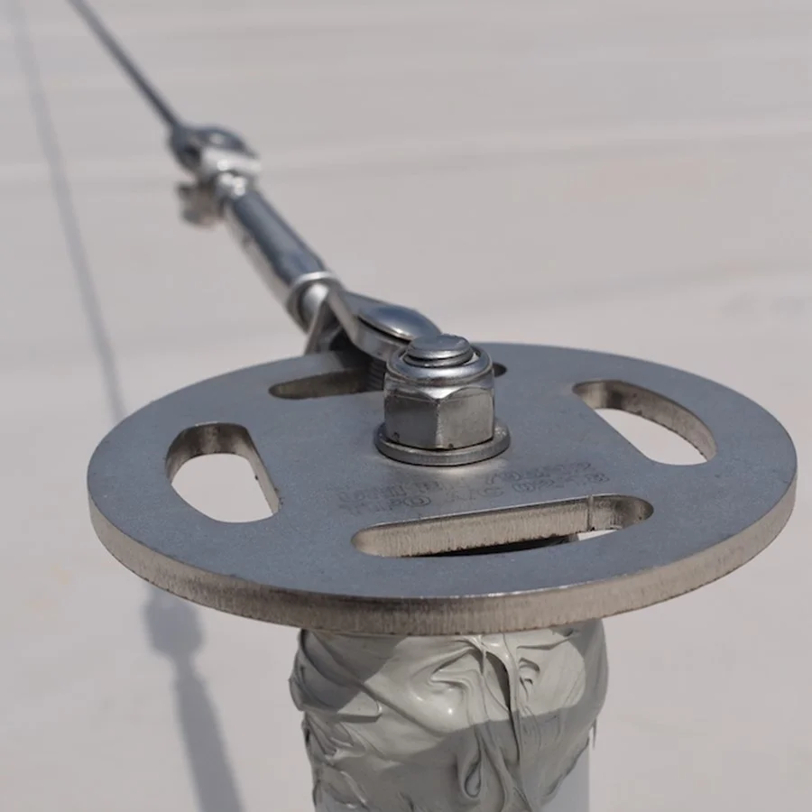
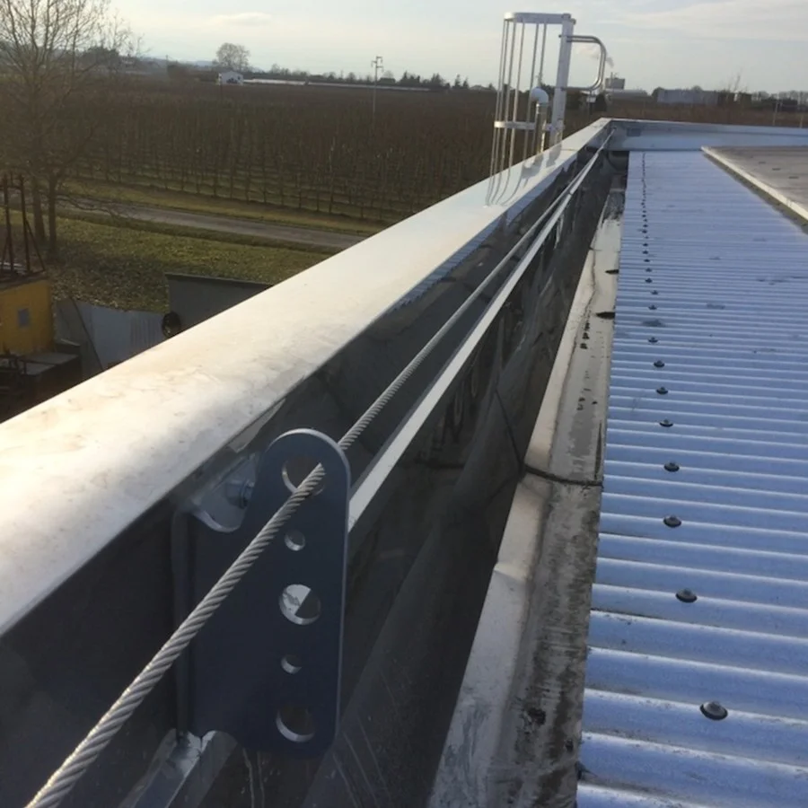
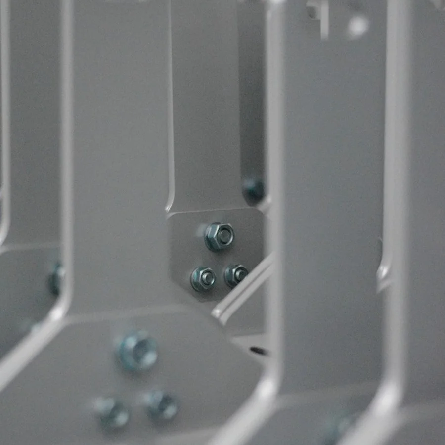
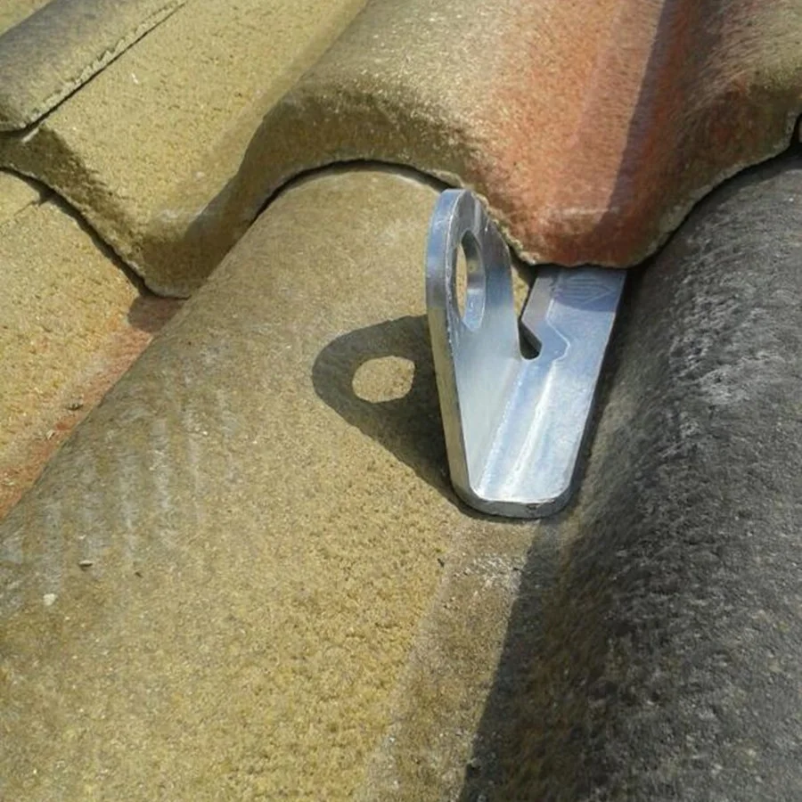

GEKO
Linea vita industriale · tipo C 5-20 m, tipo A · altezze 35-50-70 cm
Dispositivo con due o più elementi e finale direzionale smontabile, pensato per facilitare la sigillatura da parte degli impermeabilizzatori. Installazione con sistema di dissipazione elicoidale Sekure, ideale per grandi superfici in CLS o legno lamellare. Acciaio zincato a caldo o inox, con base piana o a colmo.

WALL
Linea vita industriale · tipo C 5-15 m, tipo A · altezze 80-140 mm
Dispositivo con due o più elementi e finale multidirezionale, pensato per sistemi anticaduta perimetrali anche dove il tirante d'aria è contenuto. Installazione con sistema di dissipazione elicoidale Sekure. Acciaio con finitura Sekure Top Finish RAL 9006 o inox, con base piana o a colmo.

ADE
Linea vita civile · tipo C 5-15 m, tipo A · altezze 35-60 cm
Dispositivo dall'impatto visivo contenuto e dal design curato, pensato per l'edilizia residenziale e adatto a coperture in coppi o tegole. Due o più elementi in acciaio o acciaio inox, con finitura Sekure Top Finish RAL 9006 e finale monodirezionale. Basi piana, a colmo o a falda.

TOMY GOLF
Linea vita civile · tipo A · altezze 20-35-50 cm
Dispositivo di tipo A per formare linee di risalita, di transito o come ancoraggio puntuale nelle zone a rischio "effetto pendolo". Impatto visivo contenuto e design curato. Acciaio inox, con base piana o a colmo.

TOMY GANCIO
Linea vita civile · tipo A · modelli piana, sottotegola, a T
Dispositivo di tipo A per formare linee di risalita, di transito o come ancoraggio puntuale nelle zone a rischio "effetto pendolo", adatto a coperture in coppi o tegole. Acciaio zincato a caldo o inox, nei modelli piana, sottotegola e a T.